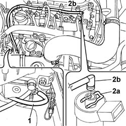
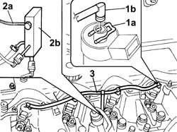
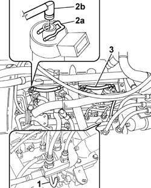

1060F52 PIPE TO RETURN MANIFOLD - R R
- Path
- Procedures > 10 ENGINE UNIT > 1060 DIESEL INJECTION SYSTEM > 1060F INJECTORS AND LINES > 1060F52 PIPE TO RETURN MANIFOLD - R R
- Kind
- repair procedure (removal / refitting; the operation number is the code)
- Applies to
- engines: 2.0 JTD 8V, 2.3 JTD 16V, 2.8 JTD 8V; all production periods
- Interactive page
- https://sloeber94.github.io/elrnDB-fDct/en/#/244000842
Applies to: engines: 2.3 JTD 16V; all production periods
 Removing
Removing
 Refitting
RefittingOp. 7055B54 UNDER-ENGINE GUARD - R R
1. Disconnect the pipe from the coupling for the return pipes to the fuel return manifold on the pressure pump.
2. Push the springs (2a) manually and disconnect the pipe from the connectors (2b) on the injectors, then remove it.

Applies to: engines: 2.3 JTD 16V; all production periods
Refitting
Removing- Fit the fuel recovery pipe and secure it to the injectors.
- Connect the pipe to the coupling for the return pipes to the fuel return manifold on the pressure pump.
Applies to: engines: 2.8 JTD 8V; all production periods
Removing
RefittingSee in Op. 1048B14
See in Op. 1016A10
1. Open the retaining band (1a) and disconnect the connector (1b).
2. Disconnect the pipe (2a) from the fuel recovery manifold (2b).
3. Remove the pipe from the injectors to the fuel recovery manifold.

Applies to: engines: 2.8 JTD 8V; all production periods
Refitting
Removing- Fit the pipe on the fuel return manifold pipe.
- Connect the connectors to the injector and secure them using the fastener.
See in Op. 1016A10
See in Op. 1048B14
Applies to: engines: 2.0 JTD 8V; all production periods
Removing
Refitting1. Disconnect the pipe from the injectors to the fuel recovery manifold from the manifold.
2. Push the springs (2a) manually and disconnect the pipe from the connectors (2b) on the injectors.
3. Remove the pipe from the injectors to the recovery manifold.

Applies to: engines: 2.0 JTD 8V; all production periods
Refitting
Removing- Fit the pipe from the injectors to the recovery manifold.
- Connect the springs for the pipe to the injectors and connect the pipe to the return manifold.